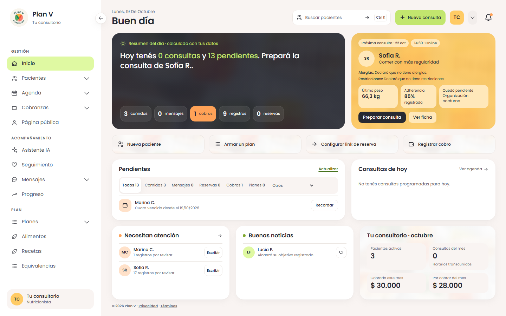
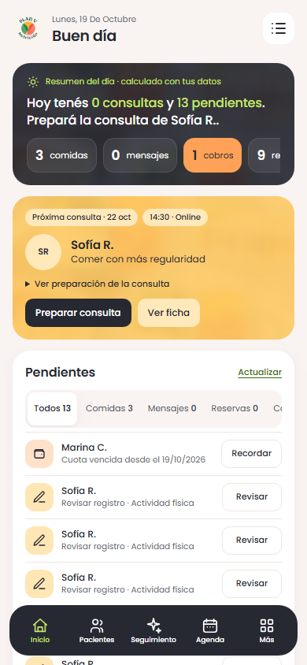

Plan V · Inicio del consultorio
Parte 2 del rediseño. Resumen del día, próxima consulta preparada, pendientes, agenda, atención, buenas noticias y números del mes, conectados con las funciones existentes.
Abrir el panel local · Boceto aprobado · Informe de verificación
Demostración con datos ficticios. El resumen declara cuándo es calculado. No se envían mensajes ni se publican planes al abrir sus accesos. En celular, tocá «Ver preparación de la consulta» para desplegar los antecedentes.
Boceto aprobado · referencia de composición Inicio implementado · 1440 × 900
Inicio implementado · 1440 × 900
En el celular
Inicio implementado · 390 × 844
Las capturas usan los datos de la demostración; cantidades, nombres y fechas cambian respecto del boceto. Las listas se desplazan dentro de las tarjetas en escritorio. Los horarios transcurridos no se presentan como prueba de una consulta clínica completada.